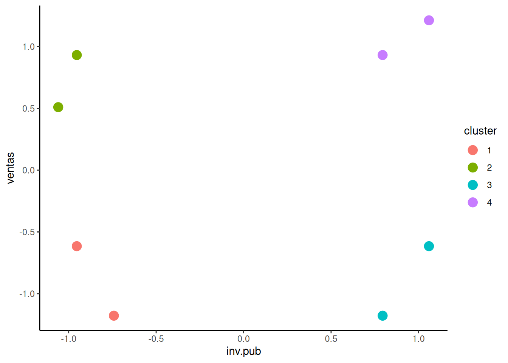
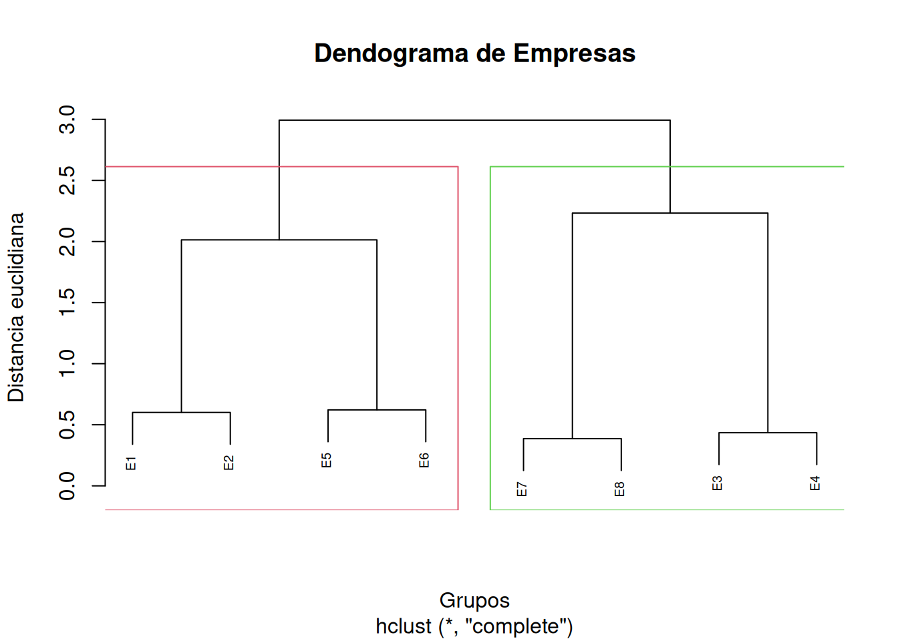
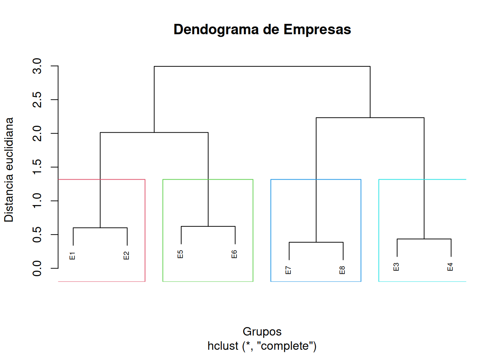
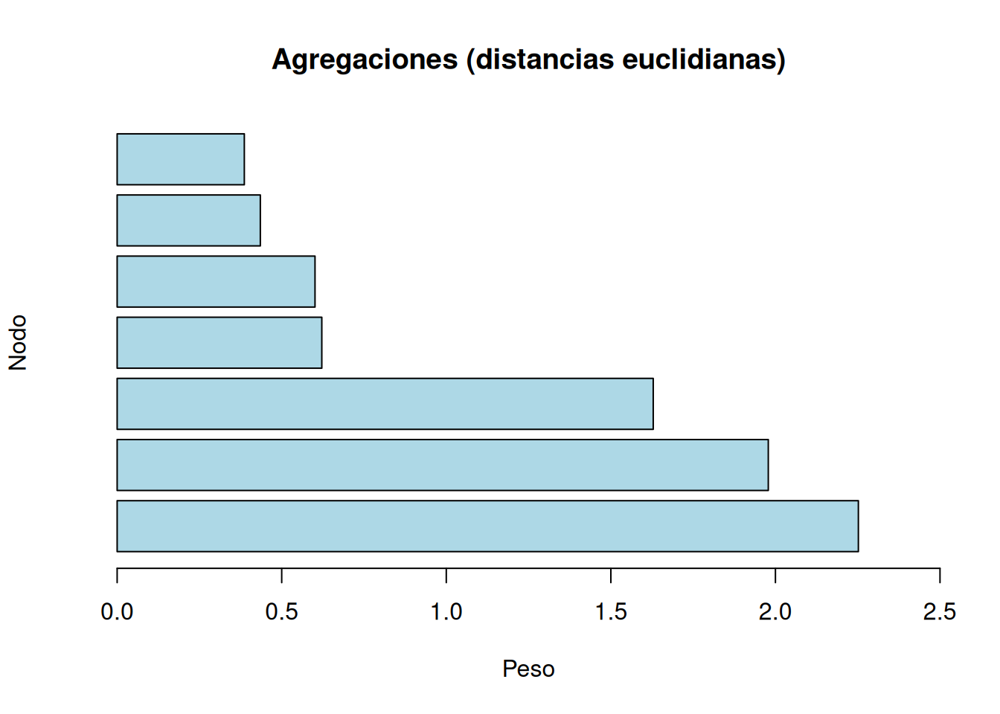
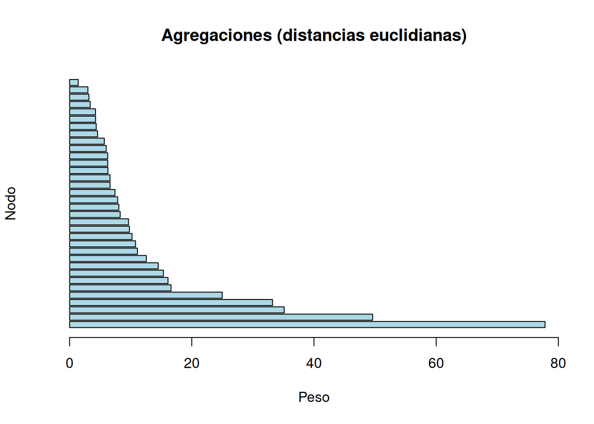
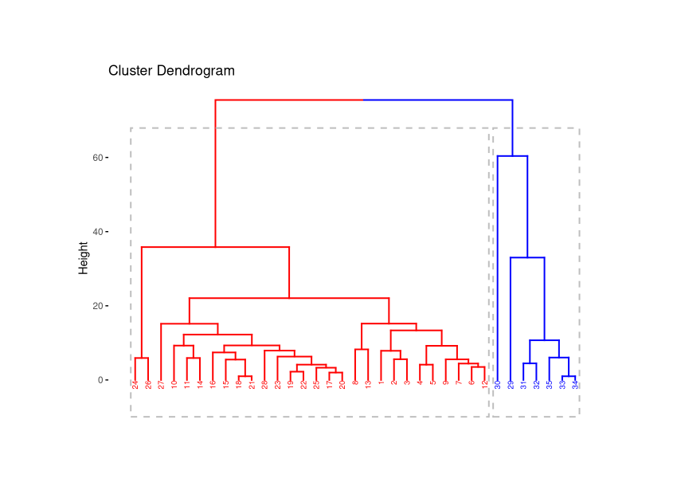
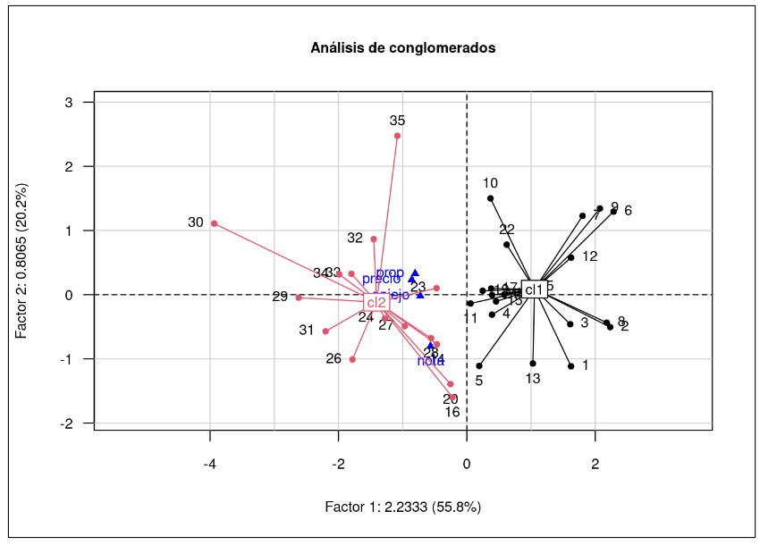

Se tiene la información sobre la inversión en publicidad y las ventas de 8 empresas
| id | 1 | 2 | 3 | 4 | 5 | 6 | 7 | 8 |
|---|---|---|---|---|---|---|---|---|
| inv.pub | 16 | 12 | 10 | 12 | 45 | 50 | 45 | 50 |
| ventas | 10 | 14 | 22 | 25 | 10 | 15 | 25 | 27 |
id= 1:8
empresa =data.frame(inv.pub = c(16,12,10,12,45,50,45,50),
ventas =c(10,14,22,25,10,14,25,27) )
rownames(empresa) = c("E1","E2","E3","E4","E5","E6","E7", "E8")Dado que los rangos de las variables son diferente y con fin de que estas diferencias en las dimensines de las variables no afecte los calculos de las distancias se aconseja estandarizar las variables (restar la media y dividir el resultado por la desviación estandar) antes de generar las calculos de las distancias
\[ z = \dfrac{\bar{x} - \mu}{\sigma} \]
empresa_z =scale(empresa)
empresa_z = as.data.frame(empresa_z)
empresa_z inv.pub ventas
E1 -0.7417009 -1.1779013
E2 -0.9536155 -0.6153216
E3 -1.0595728 0.5098379
E4 -0.9536155 0.9317727
E5 0.7946796 -1.1779013
E6 1.0595728 -0.6153216
E7 0.7946796 0.9317727
E8 1.0595728 1.2130625Las distancias correspondientes a los valores estandarizados serán:
dist(empresa_z, method = "euclidean") E1 E2 E3 E4 E5 E6 E7
E2 0.6011686
E3 1.7174126 1.1301375
E4 2.1202905 1.5470942 0.4350355
E5 1.5363805 1.8365815 2.5073323 2.7399379
E6 1.8870832 2.0131883 2.3993252 2.5389816 0.6218234
E7 2.6098255 2.3345313 1.9016521 1.7482951 2.1096739 1.5696079
E8 2.9935422 2.7195432 2.2327792 2.0327447 2.4055927 1.8283841 0.3863837dist(empresa_z, method = "manhattan") E1 E2 E3 E4 E5 E6 E7
E2 0.7744943
E3 2.0056110 1.2311167
E4 2.3215885 1.5470942 0.5278921
E5 1.5363805 2.3108748 3.5419915 3.8579690
E6 2.3638534 2.0131883 3.2443050 3.5602825 0.8274729
E7 3.6460545 3.2953893 2.2761871 1.7482951 2.1096739 1.8119874
E8 4.1922375 3.8415724 2.8223702 2.2944781 2.6558570 1.8283841 0.5461831dist(empresa_z, method = "minkowski") E1 E2 E3 E4 E5 E6 E7
E2 0.6011686
E3 1.7174126 1.1301375
E4 2.1202905 1.5470942 0.4350355
E5 1.5363805 1.8365815 2.5073323 2.7399379
E6 1.8870832 2.0131883 2.3993252 2.5389816 0.6218234
E7 2.6098255 2.3345313 1.9016521 1.7482951 2.1096739 1.5696079
E8 2.9935422 2.7195432 2.2327792 2.0327447 2.4055927 1.8283841 0.3863837library(tidyverse)
# distancia euclidiana
dist_emp <- dist(empresa_z, method = 'euclidean')
# Cluster jerarquico con el método complete
hc_emp <- hclust(dist_emp, method = 'complete')
# Determinamos a dónde pertenece cada observación
cluster_assigments <- cutree(hc_emp, k = 4)
# asignamos los clusters
assigned_cluster <- empresa_z %>% mutate(cluster = as.factor(cluster_assigments))
# gráfico de puntos
ggplot(assigned_cluster, aes(x = inv.pub, y = ventas, color = cluster)) +
geom_point(size=4) +
theme_classic()
plot(hc_emp, cex = 0.6, main = "Dendograma de Empresas",
ylab = "Distancia euclidiana", xlab = "Grupos")
rect.hclust(hc_emp, k = 2, border = 2:5)
En este diagrama se observa que al inicio los individuos que más se parecen (menor distancia euclidea) son los individuos \(E7\), \(E8\), \(E3\) y \(E4\) (\(d(E7, E8) = 0.3863837\)) \(d(E3, E4) = 0.4350355\)) , conformando estas cuatro empresas un primer cluster y el resto un segundo grupo o cluster a una distancia de 2.5.
En el caso de tener hipótesis de la existencia de de 4 grupos podemos reducir la distancia 1.0 y se obtienen cuarto conglomerados
plot(hc_emp, cex = 0.6, main = "Dendograma de Empresas",
ylab = "Distancia euclidiana", xlab = "Grupos")
rect.hclust(hc_emp, k = 4, border = 2:5)
dendograma <- hclust(dist_emp, method = "average")
grp <- cutree(dendograma, k = 4)
grpE1 E2 E3 E4 E5 E6 E7 E8
1 1 2 2 3 3 4 4 Elegir el número óptimo de clusters o grupos es una decisión subjetiva, sin embargo puede tomarse el criterio del mayor salto de nodo a nodo de las distancias euclidianas: Observando el dendograma vemos que el mayor incremento de las distancias se dio en \(1\), por lo que si trazamos una linea se hará un corte y tendremos cuatros nodos, el conformado por \((E1,E2)\), \((E5, E6)\), \((E7, E8)\) y \((E3, E4)\).
library(factoextra)
dist_emp <- dist(empresa_z, method = "euclidean")
dendograma <- hclust(dist_emp, method = "average")
# plot(dendograma, cex = 0.6, hang = -1)
barplot(sort(dendograma$height, decreasing = TRUE), horiz = TRUE,
main = "Agregaciones (distancias euclidianas)",
col = "lightblue", ylab = "Nodo", xlab = "Peso", xlim = c(0, 2.5))
Por último se mide el indice de Silhouette promedio con el fin de valorar la mejor alternativa para la elección del número de conglomerados
library(tidyverse)
library(cluster)
# distancia euclidiana
dist_emp <- dist(empresa_z, method = 'euclidean')
# Cluster jerarquico con el método complete
hc_emp <- hclust(dist_emp, method = 'complete')
# Determinamos a dónde pertenece cada observación
cluster_assigments <- cutree(hc_emp, k = 4)
# Calcular el coeficiente de Silhouette
sil <- silhouette(cluster_assigments, dist(empresa_z))
sil_avg <- mean(sil[,3])
# Imprimir el coeficiente de Silhouette promedio
cat("Coeficiente de Silhouette promedio k=4 : ", sil_avg)Coeficiente de Silhouette promedio k=4 : 0.690995library(tidyverse)
library(cluster)
# distancia euclidiana
dist_emp <- dist(empresa_z, method = 'euclidean')
# Cluster jerarquico con el método complete
hc_emp <- hclust(dist_emp, method = 'complete')
# Determinamos a dónde pertenece cada observación
cluster_assigments <- cutree(hc_emp, k = 2)
# Calcular el coeficiente de Silhouette
sil <- silhouette(cluster_assigments, dist(empresa_z))
sil_avg <- mean(sil[,3])
# Imprimir el coeficiente de Silhouette promedio
cat("Coeficiente de Silhouette promedio k=2 : ", sil_avg)Coeficiente de Silhouette promedio k=2 : 0.3416799Estos resultados indican una mejor agrupación cuando se eligen k=4 conglomerados. (valores más cercanos a 1 indican un agrupamiento más coherente)
El siguiente ejemplo en R cuenta con un conjunto de
datos sobre \(35\) observaciones de
whiskys, que contiene las variable precio,
proporción de alcohol, años de añejo y la
nota que le da el jurado a la calidad de estos.
data("whisky")
#data = read.table("whisky.txt", header = TRUE, row.names = 1)
tail(whisky)# A tibble: 6 × 5
IND PRECIO PROP AÑEJO NOTA
<dbl> <dbl> <dbl> <dbl> <dbl>
1 30 160 100 12 3
2 31 90 100 12 4
3 32 86 100 12 2
4 33 100 100 10 3
5 34 100 100 11 3
6 35 95 100 12 0Mediante la libreria factoextra podemos calcular las distancias euclidianas de los individuos y gráficar el dendograma del conjunto de datos:
library(factoextra)
distancias <- dist(whisky, method = "euclidean")
dendograma <- hclust(distancias, method = "average")
# plot(dendograma, cex = 0.6, hang = -1, main= "Dendograma")
barplot(sort(dendograma$height, decreasing = TRUE), horiz = TRUE,
main = "Agregaciones (distancias euclidianas)",
col = "lightblue", ylab = "Nodo", xlab = "Peso", xlim = c(0, 80))
Podemos observar que el mayor salto en las agregaciones se da en 60.38, por lo que se puede realizar un corte con este valor en el dendograma, quedando:
fviz_dend(dendograma, k=2, cex = 0.5,
k_colors = c("red", "blue"),
color_labels_by_k = TRUE,
rect=TRUE,
main = "Dendograma")
En este caso el número optimo de grupos o clusters será de 2. Con el siguiente código podemos ver en la primera fila los individuos y en la segunda los clusters a los que estos pertenecen.
grp <- cutree(dendograma, k = 2)
grp [1] 1 1 1 1 1 1 1 1 1 1 1 1 1 1 1 1 1 1 1 1 1 1 1 1 1 1 1 1 2 2 2 2 2 2 2La libreria FactoClass para representar los clusters en
el primer plano factorial, en la función FactoClass tenemos
los siguientes argumentos:
nf: número de componentes principales, recordemos
que en el acp este será igual al número de variables.
nfcl: número de componentes usadas para
clasificación, en este caso será igual anf=p.
k.clust: número de clusters, en este caso mediante
el dendograma elegimos dos clusters.
library(FactoClass)
p = ncol(data)
# Cluster <- FactoClass(whisky, dudi.pca, nf = p, nfcl = p, k.clust = 2, scanFC = FALSE)library(FactoClass)
# plotFactoClass(Cluster,title="Análisis de conglomerados")